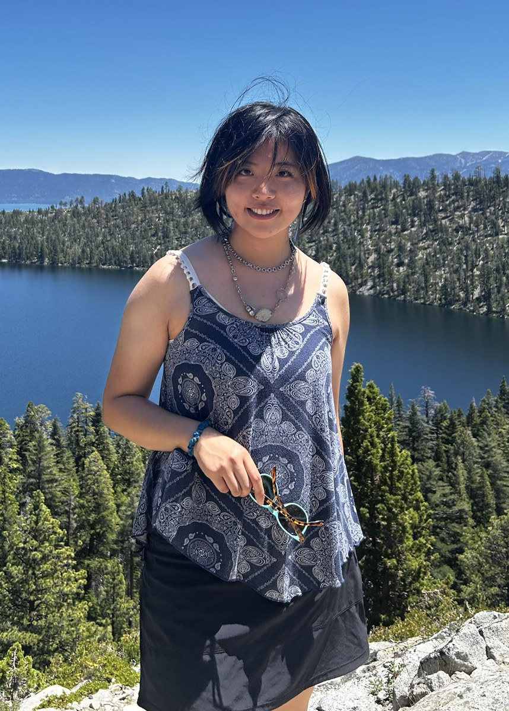

Yayun Tan
Hello! I am a first-year Ph.D. student in Electrical Engineering and Computer Science at the University of California, Merced, advised by Prof. Xiaofan Yu in the YuCCA Lab. My research interests lie in building reliable AI systems that reason, make decisions, and act autonomously in real-world environments.

About
Before joining UC Merced, I completed my M.S. in Computer Science at California Polytechnic State University, San Luis Obispo, where I worked with Prof. Franz Kurfess in the AI4SAR group. As a research assistant, I led the agentic design team, mentored several undergraduate students, and worked on multi-agent AI systems for search and rescue. I also led a CSU Artificial Intelligence Educational Innovations Challenge project on AI for engineering education, and served as a teaching assistant for CSC 580: Artificial Intelligence.
I received my B.E. in Computer Science and Engineering from Northeastern University (China), where I worked with Prof. Yanfeng Zhang on distributed graph neural network training systems. I also did research with Prof. Feiliang Ren on knowledge-grounded generative AI.
Outside research, I enjoy hiking, cooking, and making art, including sketching, line drawing, watercolor and acrylic painting. I share some of my artwork on Instagram.
Publications and Presentations
Publications
- Y. Tan. "Trustworthy Intelligence Fusion for Search and Rescue: Designing Grounded and Secure Multi-Agent AI for Mission Decision Support." M.S. thesis, California Polytechnic State University, San Luis Obispo, 2026.
- Y. Tan, F. Kurfess, E. Delgado, C. Young, and G. Bloom. "Post-Hoc Knowledge Grounding for Verifiable Multi-Agent Search and Rescue Decision Support." AAAI-MAKE, San Francisco, CA, 2026.
Presentations
- "Leveraging Knowledge Graphs for Real-Time Intelligence in Search and Rescue." NCJTC Conference, Las Vegas, NV, 2025.
- "AI-Powered Search and Rescue: Multi-Agent System with Knowledge Graphs." Nxt-AI Conference, San Francisco, CA, 2025.